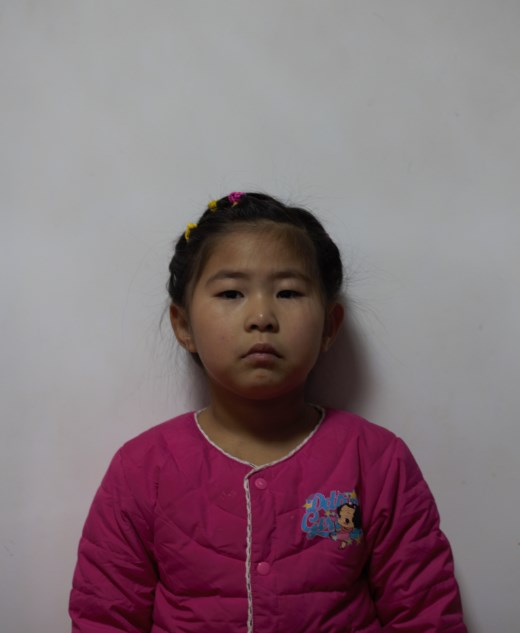
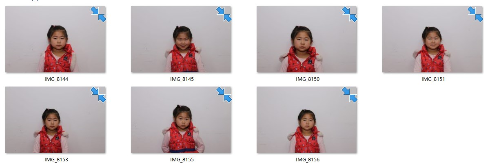
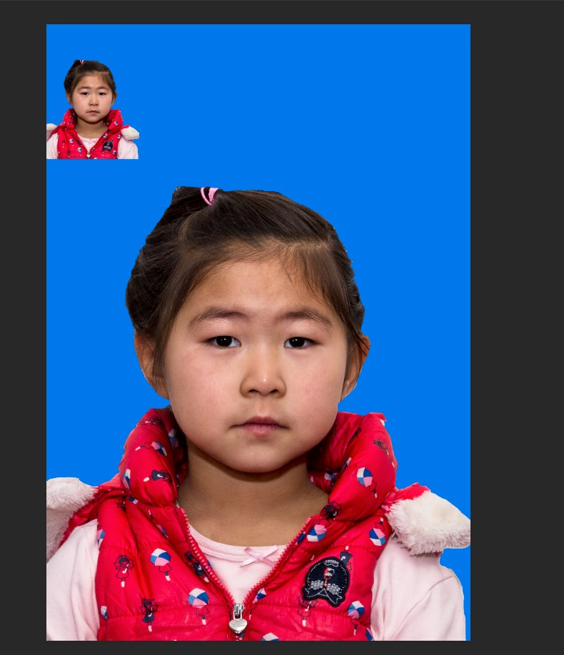
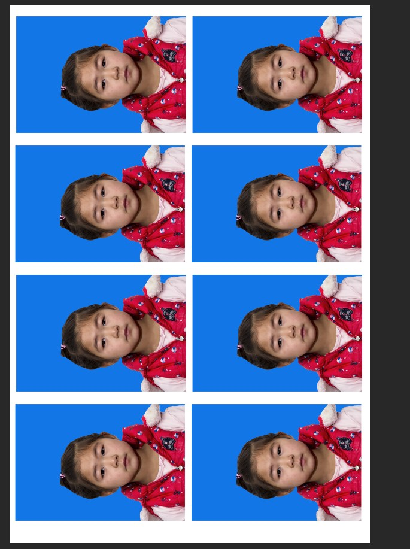

<!DOCTYPE html>


  <html class="light page-post">


<head><meta name="generator" content="Hexo 3.8.0">
  <meta charset="utf-8">
  
  <title>时薪4块5 | Hexo</title>

  <meta name="viewport" content="width=device-width, initial-scale=1, maximum-scale=1">

  
    <meta name="keywords" content="生活 家,">
  

  <meta name="description" content="时薪4块5 第一次给祐祐做二寸照片​      我家小天使要考舞蹈证，需要一张2寸的照片。以前就想要弄个打印机，把我闺女和家里的照片打印一些出来，加上要证件照，考虑了一下以后这种事儿还多着呢，决定了弄个打印机，自己开工。搜了一下便宜的佳能，但是后期的墨盒打印量少又贵，而且所有的打印机都是黑白的，，终于有一个艳红色的，墨盒也比较合适，打印的多，价钱还不是特别贵。虽然需要在不怎么用的时候就收起来，这">
<meta name="keywords" content="生活 家">
<meta property="og:type" content="article">
<meta property="og:title" content="时薪4块5">
<meta property="og:url" content="http://yoursite.com/2019/01/10/时薪4块5/index.html">
<meta property="og:site_name" content="Hexo">
<meta property="og:description" content="时薪4块5 第一次给祐祐做二寸照片​      我家小天使要考舞蹈证，需要一张2寸的照片。以前就想要弄个打印机，把我闺女和家里的照片打印一些出来，加上要证件照，考虑了一下以后这种事儿还多着呢，决定了弄个打印机，自己开工。搜了一下便宜的佳能，但是后期的墨盒打印量少又贵，而且所有的打印机都是黑白的，，终于有一个艳红色的，墨盒也比较合适，打印的多，价钱还不是特别贵。虽然需要在不怎么用的时候就收起来，这">
<meta property="og:locale" content="default">
<meta property="og:image" content="http://yoursite.com/2019/01/10/时薪4块5/old_white.jpg">
<meta property="og:image" content="http://yoursite.com/2019/01/10/时薪4块5/old_blue.jpg">
<meta property="og:image" content="http://yoursite.com/2019/01/10/时薪4块5/new_1_dark.jpg">
<meta property="og:image" content="http://yoursite.com/2019/01/10/时薪4块5/new_2_list.jpg">
<meta property="og:image" content="http://yoursite.com/2019/01/10/时薪4块5/new_2_build.jpg">
<meta property="og:image" content="http://yoursite.com/2019/01/10/时薪4块5/new_2_result.jpg">
<meta property="og:updated_time" content="2019-01-10T03:46:37.715Z">
<meta name="twitter:card" content="summary">
<meta name="twitter:title" content="时薪4块5">
<meta name="twitter:description" content="时薪4块5 第一次给祐祐做二寸照片​      我家小天使要考舞蹈证，需要一张2寸的照片。以前就想要弄个打印机，把我闺女和家里的照片打印一些出来，加上要证件照，考虑了一下以后这种事儿还多着呢，决定了弄个打印机，自己开工。搜了一下便宜的佳能，但是后期的墨盒打印量少又贵，而且所有的打印机都是黑白的，，终于有一个艳红色的，墨盒也比较合适，打印的多，价钱还不是特别贵。虽然需要在不怎么用的时候就收起来，这">
<meta name="twitter:image" content="http://yoursite.com/2019/01/10/时薪4块5/old_white.jpg">

  

  
    <link rel="icon" href="/favicon.ico">
  

  <link href="/css/styles.css?v=c114cbeddx" rel="stylesheet">


  
    <link rel="stylesheet" href="/css/personal-style.css">
  

  
<!-- Google Analytics -->
<script type="text/javascript">
(function(i,s,o,g,r,a,m){i['GoogleAnalyticsObject']=r;i[r]=i[r]||function(){
(i[r].q=i[r].q||[]).push(arguments)},i[r].l=1*new Date();a=s.createElement(o),
m=s.getElementsByTagName(o)[0];a.async=1;a.src=g;m.parentNode.insertBefore(a,m)
})(window,document,'script','//www.google-analytics.com/analytics.js','ga');

ga('create', 'UA-38189205-1', 'auto');
ga('send', 'pageview');

</script>
<!-- End Google Analytics -->


  
  <script type="text/javascript">
    var _hmt = _hmt || [];
    (function() {
      var hm = document.createElement("script");
      hm.src = "//hm.baidu.com/hm.js?57e94d016e201fba3603a8a2b0263af0";
      var s = document.getElementsByTagName("script")[0];
      s.parentNode.insertBefore(hm, s);
    })();
  </script>


  
  <script type="text/javascript">
	(function(){
	    var bp = document.createElement('script');
	    var curProtocol = window.location.protocol.split(':')[0];
	    if (curProtocol === 'https') {
	        bp.src = 'https://zz.bdstatic.com/linksubmit/push.js';        
	    }
	    else {
	        bp.src = 'http://push.zhanzhang.baidu.com/push.js';
	    }
	    var s = document.getElementsByTagName("script")[0];
	    s.parentNode.insertBefore(bp, s);
	})();
  </script>


  
    <script async src="https://busuanzi.ibruce.info/busuanzi/2.3/busuanzi.pure.mini.js"></script>
    <link rel="stylesheet" href="//cdn.bootcss.com/font-awesome/4.3.0/css/font-awesome.min.css">
  

</head>
</html>
<body>


  
    <span id="toolbox-mobile" class="toolbox-mobile">盒子</span>
  

  <div class="post-header CENTER">
   
  <div class="toolbox">
    <a class="toolbox-entry" href="/">
      <span class="toolbox-entry-text">盒子</span>
      <i class="icon-angle-down"></i>
      <i class="icon-home"></i>
    </a>
    <ul class="list-toolbox">
      
        <li class="item-toolbox">
          <a class="CIRCLE" href="/archives/" rel="noopener noreferrer" target="_self">
            博客
          </a>
        </li>
      
        <li class="item-toolbox">
          <a class="CIRCLE" href="/category/" rel="noopener noreferrer" target="_self">
            分类
          </a>
        </li>
      
        <li class="item-toolbox">
          <a class="CIRCLE" href="/tag/" rel="noopener noreferrer" target="_self">
            标签
          </a>
        </li>
      
        <li class="item-toolbox">
          <a class="CIRCLE" href="/link/" rel="noopener noreferrer" target="_self">
            友链
          </a>
        </li>
      
        <li class="item-toolbox">
          <a class="CIRCLE" href="/about/" rel="noopener noreferrer" target="_self">
            关于
          </a>
        </li>
      
        <li class="item-toolbox">
          <a class="CIRCLE" href="/atom.xml" rel="noopener noreferrer" target="_blank">
            RSS
          </a>
        </li>
      
        <li class="item-toolbox">
          <a class="CIRCLE" href="/search/" rel="noopener noreferrer" target="_self">
            搜索
          </a>
        </li>
      
    </ul>
  </div>


</div>


  <div id="toc" class="toc-article">
    <strong class="toc-title">文章目录</strong>
    <ol class="toc"><li class="toc-item toc-level-1"><a class="toc-link" href="#undefined"><span class="toc-text"> 时薪4块5</span></a><ol class="toc-child"><li class="toc-item toc-level-2"><a class="toc-link" href="#第一次给祐祐做二寸照片"><span class="toc-text">第一次给祐祐做二寸照片</span></a><ol class="toc-child"><li class="toc-item toc-level-3"><a class="toc-link" href="#undefined"><span class="toc-text">第一次给祐祐做二寸照片</span></a></li></ol></li></ol></li></ol>
  </div>


<div class="content content-post CENTER">
   <article id="post-时薪4块5" class="article article-type-post" itemprop="blogPost">
  <header class="article-header">
    <h1 class="post-title">时薪4块5</h1>

    <div class="article-meta">
      <span>
        <i class="icon-calendar"></i>
        <span>2019.01.10</span>
      </span>

      
        <span class="article-author">
          <i class="icon-user"></i>
          <span>petra</span>
        </span>
      

      


      

      
      <i class="fa fa-eye"></i> 
        <span id="busuanzi_container_page_pv">
           &nbsp热度 <span id="busuanzi_value_page_pv">
           <i class="fa fa-spinner fa-spin"></i></span>℃
        </span>
      
      
    </div>
  </header>

  <div class="article-content">
    
      <p></p><h1 style="text-align:center"> 时薪4块5</h1><p></p>
<h2 id="第一次给祐祐做二寸照片"><a href="#第一次给祐祐做二寸照片" class="headerlink" title="第一次给祐祐做二寸照片"></a><h3 style="text-align:right">第一次给祐祐做二寸照片</h3></h2><p>​      我家小天使要考舞蹈证，需要一张2寸的照片。以前就想要弄个打印机，把我闺女和家里的照片打印一些出来，加上要证件照，考虑了一下以后这种事儿还多着呢，决定了弄个打印机，自己开工。搜了一下便宜的佳能，但是后期的墨盒打印量少又贵，而且所有的打印机都是黑白的，，终于有一个艳红色的，墨盒也比较合适，打印的多，价钱还不是特别贵。虽然需要在不怎么用的时候就收起来，这个等用上再考虑吧。。</p>
<p>​      先用我闺女以前的一张照相馆照的证件照试了试换底色，结果照片本身有问题换的并不成功。<br>​     </p>
<p>​      然后就是自己来照一张照片再做处理了。<br>​    </p>
<p>​      第一次照，是晚上，也没有考虑灯光的事儿，随手用6d+50照了一张来练手。照的实在太暗了，然后处理的时候几乎把信心都给磨没了。。连成果都没有。。<br>​      今天，在新年的第一天，再次开工，这次一定要搞定，做为今年成功的第一件事儿。<br>​      先是照相，找出相机，闪光灯，把柔光罩带上，准备好。我家素颜的小公主，连脸还都没洗呢，拍照前用湿巾擦了擦脸，用一面我有闺女亲笔画的墙做背景，拍照了几张照片，发现还是有一些暗，光打的不匀，想了个简单的办法，把我的手机放在脚下做补光，手里再拿张白纸做反光板，可是脖子部分还有点暗，先这样吧。。我家小宝贝实在是太容易被别的东西吸引，一会儿看姥爷一会看妈妈，，商量了几次才跟她对上眼神儿，照了几张照片。<br>​    </p>
<p>​      然后就是传说中的修图了。。<br>​      修图实在是太可怕了，各种找攻略，在一个攻略中有一个新名词就得再找一个攻略，然后就像打游戏一样，一步步的勉强修图，，根据网上的教程，因为墙太暗，不是一个合适的背景，把照片导入到lr，先修整镜头参数，然后做基础调查，分别调整了颜色：adobe人像；白平衡：闪光灯；色调：自动。然后用画笔把背景调整曝光到4，这样得到了一个纯白的背景，导出为dng。<br>​      再用ps打开dng，用修复画笔把脸上的小点点修掉。把图切掉，因为需要使用的是小两寸，用的比例是3.3*4.8，回车切图。<br>​      然后ctrl+shift+N创建一个新的图层，选择柔光，填充柔光中性50度灰，然后用白色把暗的部分用20%不透明度涂抹一下，简单提亮一下。然后用选择工具，使用颜色选择，把背景全部选中，然后填充为背景蓝色，18+118+231，填充后肯定在人像与背景中间有缝，再用油漆桶慢慢的填充上，实在没正经用过ps，先勉强做成这样吧。<br>    </p>
<p>​      下一步打印照片，新建一个文件，大小为4<em>6寸相纸大小，10.2</em>15.2cm，然后把修好的图缩放到3.3*4.8cm，拷贝到新的文件中，再摆成8张，<br>    </p>
<p>​      出了一个小错误，为了后面好剪开，应该把照片与照片之间的缝隙留的稍稍大一些。<br>然后就是打印了，选择打印机，这里是打印照片，注意把纸张尺寸改为4*6寸，然后打印，也算是成功了吧，，不过因为是喷墨的打印机，打出来的照片不如打印店的激光打印机那么光滑，还有一点竖线。先这样吧，反正不影响报考舞蹈。</p>
<p>​      祐祐妈一直觉得我打印的不好，一摸照片就花了，我把锅扣给了喷墨打印，以为等干了会好一些，在她的坚持下，最后又检查了一遍，发现打印时的设置出错了，没有调整到照片打印，打印出来的效果是纸张打印，调整后，虽然还达不到激光打印的效果，但是也算是正常照片了。</p>
<p>​      至此，今年第一件事儿完成了，要是算上这篇记录，那就是完成两件了，加油。今年做事儿都要有头有尾。</p>

    
  </div>

</article>


   
  <div class="text-center donation">
    <div class="inner-donation">
      <span class="btn-donation">支持一下</span>
      <div class="donation-body">
        <div class="tip text-center">扫一扫，支持Petra</div>
        <ul>
        
          <li class="item">
            
              <span>微信扫一扫</span>
            
            
          </li>
        
          <li class="item">
            
              <span>支付宝扫一扫</span>
            
            
          </li>
        
        </ul>
      </div>
    </div>
  </div>


   
  <div class="box-prev-next clearfix">
    <a class="show pull-left" href="/2019/01/07/restart/">
        <i class="icon icon-angle-left"></i>
    </a>
    <a class="hide pull-right" href="/">
        <i class="icon icon-angle-right"></i>
    </a>
  </div>


</div>


  <a id="backTop" class="back-top">
    <i class="icon-angle-up"></i>
  </a>


  <div class="modal" id="modal">
  <span id="cover" class="cover hide"></span>
  <div id="modal-dialog" class="modal-dialog hide-dialog">
    <div class="modal-header">
      <span id="close" class="btn-close">关闭</span>
    </div>
    <hr>
    <div class="modal-body">
      <ul class="list-toolbox">
        
          <li class="item-toolbox">
            <a class="CIRCLE" href="/archives/" rel="noopener noreferrer" target="_self">
              博客
            </a>
          </li>
        
          <li class="item-toolbox">
            <a class="CIRCLE" href="/category/" rel="noopener noreferrer" target="_self">
              分类
            </a>
          </li>
        
          <li class="item-toolbox">
            <a class="CIRCLE" href="/tag/" rel="noopener noreferrer" target="_self">
              标签
            </a>
          </li>
        
          <li class="item-toolbox">
            <a class="CIRCLE" href="/link/" rel="noopener noreferrer" target="_self">
              友链
            </a>
          </li>
        
          <li class="item-toolbox">
            <a class="CIRCLE" href="/about/" rel="noopener noreferrer" target="_self">
              关于
            </a>
          </li>
        
          <li class="item-toolbox">
            <a class="CIRCLE" href="/atom.xml" rel="noopener noreferrer" target="_blank">
              RSS
            </a>
          </li>
        
          <li class="item-toolbox">
            <a class="CIRCLE" href="/search/" rel="noopener noreferrer" target="_self">
              搜索
            </a>
          </li>
        
      </ul>

    </div>
  </div>
</div>


  
      <div class="fexo-comments comments-post">
    

    

    
    

    

    
    

    

<!-- Gitalk评论插件通用代码 -->
<div id="gitalk-container"></div>

<link rel="stylesheet" href="https://cdn.jsdelivr.net/npm/gitalk@1/dist/gitalk.css">
<script src="https://cdn.jsdelivr.net/npm/gitalk@1/dist/gitalk.min.js"></script>
<script>
const gitalk = new Gitalk({
  clientID: '277317290454635afa73',
  clientSecret: '78223c859304da5e8d71bfce136d436c6ff95c37',
  repo: 'blog-comment',
  owner: 'petra',
  // 在这里设置一下截取前50个字符串, 这是因为 github 对 label 的长度有了要求, 如果超过
  // 50个字符串则会报错.
  // id: location.pathname.split('/').pop().substring(0, 49),
  id: location.pathname,
  admin: ['petra'],
  // facebook-like distraction free mode
  distractionFreeMode: false
})
gitalk.render('gitalk-container')
</script>
<!-- Gitalk代码结束 -->


  </div>

  

  <script type="text/javascript">
  function loadScript(url, callback) {
    var script = document.createElement('script')
    script.type = 'text/javascript';

    if (script.readyState) { //IE
      script.onreadystatechange = function() {
        if (script.readyState == 'loaded' ||
          script.readyState == 'complete') {
          script.onreadystatechange = null;
          callback();
        }
      };
    } else { //Others
      script.onload = function() {
        callback();
      };
    }

    script.src = url;
    document.getElementsByTagName('head')[0].appendChild(script);
  }

  window.onload = function() {
    loadScript('/js/bundle.js?235683', function() {
      // load success
    });
  }
</script>

</body>
</html>
